常见故障整理
手写 sql
if 条件的字段为空则不应该拼接条件，是一个很容易被忽略的编程错误。如果线上发生了这个问题，则可能导致数据同步出错。
熔断和降级仍然导致 cpu 过高
熔断和降级会导致大量的日志打印。
日志打印在高并发时可能遇到问题：
ThrowableProxy.toExtendedStackTrace内部会进行loadClass操作。
并且可以看到ClassLoader的loadClass在加载类时
1）首先会持有锁。
2）调用findLoadedClass看下是否类已经被加载过了
3）如果类没被加载过，根据双亲委派模型去加载类。
可以看到当某个类被加载过了，调用findLoadedClass会直接返回，锁也会被很快释放掉，无需经过双亲委派等后面的一系列步骤。
但是，在进行反射调用时，JVM会进行优化，会动态生成名为sun.reflect.GeneratedMethodAccessor
的类，这个类无法通过ClassLoader.loadClass方法加载。 导致每次解析异常栈进行类加载时，锁占有的时间很长，最终导致阻塞。
Java中对反射的优化
使用反射调用某个类的方法，jvm内部有两种方式
JNI：使用native方法进行反射操作。
pure-Java：生成bytecode进行反射操作，即生成类sun.reflect.GeneratedMethodAccessor
对于使用JNI的方式，因为每次都要调用native方法再返回，速度会比较慢。所以，当一个方法被反射调用的次数超过一定次数（默认15次）时，JVM内部会进行优化，使用第2种方法，来加快运行速度。
JVM有两个参数来控制这种优化
IDEA 里的 VM options：
-Dsun.reflect.inflationThreshold=
value默认为15，即反射调用某个方法15次后，会由JNI的方式变为pure-java的方式
-Dsun.reflect.noInflation=true
默认为false。当设置为true时，表示在第一次反射调用时，就转为pure-java的方式
关于如何验证上面所说的反射优化以及两个参数的具体作用，可以参考R大的这篇博客https://rednaxelafx.iteye.com/blog/548536
1 | |
这个方法不一定能够奏效。
如何关闭JVM对反射调用的优化？
想关闭JVM对反射优化怎么办?
JVM中只提供了两个参数，因此，没有办法完全关闭反射优化。
一种能想到的接近于关闭反射优化的方法就是将inflationThreshold设为的一个特别大的数。
inflationThreshold是java中的int型值，可以考虑把其设置为Integer.MAX_VALUE ((2^31)-1)。
$ java -Dsun.reflect.inflationThreshold=2147483647 MyApp
两类触发条件：
- 高并发打印异常栈日志(QPS>50)；
- 异常栈中包含反射相关的类(RPC中间件、aop)；
解决方案，绕开 log4j里面的 ThrowableProxy.toExtendedStackTrace 对异常的处理流程：
1 | |
参考：
老的表如果预先没有加好查询索引，则后续维护的 orm 用户更加容易忘记加
缺慢查询告警则无法在性能恶化以前发现这个问题。
nginx 集群的 tps 只有 18 万，不容易动态扩容。因为没有打招呼，所以没有扩容。前后端没有做过针对活动的限流调整。
要针对活动对 PaaS、IaaS 层做预案设计，这种偏物理层面的非逻辑节点隐藏得特别深，容易被忽略。
改配置无前置正确性校验和运营审核卡点
要配上前置校验工具和卡点平台。
不同业务没有做数据层面的隔离，而只做了应用层面的隔离
错误雪崩无边界。
MySQL 官方bug
相互矛盾的 dml 会使用同一个 commitid，因而在从库被并行执行，被并行执行时触发死锁。：FLUSH PRIVILEGES may cause MTS deadlock
平台有两种工作模式时，无缓存的工作模式没有经过深入测试
无缓存的测试数据集比较小，分布不够散列，导致测试的结果不能匹配线上真实的大流量。
动态配置服务
广播失败，播放了缺省值。
Java 7 的 code cache 问题
根因：
- codecache打满且发生flush；
- flush之后未操作过重启；
- 热点代码已从codecache中卸载。
Code cache flushing causes stop in compilation, contention on
codecache lock and lots of wasted CPU cycles when the code cache gets
full.When uncommited codecache memory is less than the the size of the
total memory on the freelist, we iterate the entire freelist for the
largest block. This is done from ~8 places in the compiler broker. As
long as the largest block is less than CodeCacheMinimumFreeSpace
(1,5M) all compilation is halted and flushing is invoked. Since
gathering a 1,5M continous freelist block will take some time,
compilations is delayed, and regular flushing makes the freelist
longer and longer. After a while it is very long, but still far from
being continous. More and more time is spent iterating the freelist.
All profile counters that overflow will end up checking the freelist.
All compiler threads will check the freelist a few times before
delaying compilation. In addition the freelist is accessed holding the
codecache lock making the excessive iterating fully serilized. After a
day or so a CPU core may spend 100% of its cycles banging the
codecache locka and iterating the freelist. Also the application slows
down when more and more code is flushed from the cache.This problem is mostly mainfested with tiered compilation since we
compile and reclaim a lot more code. A clear symptom is when the VM
has stopped compiling even though it reports it has enough free code
cache. The problem is worse with big codecaches since the freelist
will be more fragmented and get much longer before finding a continous
block.Workaround: Turn of code cache flushing.
Solution is probably not to require continous free memory. The cause
for the threshold is to gaurantee space for adapters, and they are
usually small and will fit anyway.
这个结论大致上认为：
如果 uncommited codecache memory（未提交 codecache 内存）小于 the the size of the
total memory on the freelist（这个设计很像 InnoDB 的 free list），JVM会去查找 freelist 寻找 largest block。姑且认为，这是一个线性数据结构。如果查找的结果，largest block 小于一个法定配置 CodeCacheMinimumFreeSpace (1,5M，comment 里的说法是 500k) ，JVM就会不安地 halt 住 all compilation，并且开始 flushing code cache。这个 flushing 第一持有锁，第二目标是构造一块连续的内存，大于等于 CodeCacheMinimumFreeSpace。因为 complier 是多线程的，但锁的存在让这个iterating fully serialized，所以 lock centention 出现了，因为 code cache 被清理了，所以 cpu utilization 会飙得非常高。这时候光看 JVM的内存状态诊断会发现，其实还有 enough free code cache。大的code cache 碎片化更严重，所以并不一定能解决这个问题。
一个潜在的解法是：允许 code cache 在非连续内存上工作。
这类问题不易复现的原因之一是：
A DESCRIPTION OF THE PROBLEM :
1.7 JVM’s (starting with Java 1.7.0_4) set ReservedCodeCacheSize option to the default value of 48MB. Once the Code Cache size reaches
this limit, JVM switches the hotspot off forever.This results in the immediate performance decrease for all not yet
“compiled” code and gradual “slow” performance decrease for already
“compiled” code which was “too long” time in the cache and is removed
from cache later.Unfortunately there is no way back - once the JVM decides to switch to
the interpreted mode, it never switches back even if the CodeCache
memory is freed again.
如果 code cache “满了”，JVM 会关闭 JIT，所以这个 flushing 在折磨完人以后不会再出现。而应该被放在 code cache 里的代码分支，突然会变得很慢很慢。
只有重启这台机器，然后通过压测能够复现这个问题。
出现这个问题的时候，cpu 的监控和 code cache 的监控的抖动是一致的。
code cache 的简介，注意 jcmd、nmt 对 code、code heap、profiled method、non-profiled method 等方法的描述。
线程池的父子任务互相等待，导致线程池耗尽，从 worker 线程池一直阻塞到
这篇文章的结论要辩证地接受，ThreadPerTaskExecutor 是个很危险的线程池。如果使用 commonPool则 CompletableFuture#join方法在进入阻塞之前，判断当前线程是 ForkJoinWorkerThread线程则会在满足条件时先尝试补偿线程，确保有足够的线程去保证任务可以正常执行，这个知识点很重要。
不过有意思的是，父任务取走了所有线程，而子任务取不到线程，且父任务阻塞调用子任务，就有可能会产生死锁。
ES 扩容到错误的机器，引发频发降级
- 在 SSD 机器上得到的经验不一定适用于 SATA 机器，SATA 机器的存在最终会导致误申请。
- 在业务高峰时迁移大分片可能导致业务的平响上升。自动迁移要有高低峰的限制。
nginx 的配置模块 lru cache不够用，导致部分配置丢失，导致流量偏移，拖垮中心单元
敏感配置如果不可降级，怎么做好冗余？
MySQL 里使用 bigint 表达自增 id，但 Java 代码里使用 Integer，导致 ORM 映射失败
所有的数据库字段，最好统一生成，不要自己手写，很容易出错。
beandefinition 里面依赖 bean
循环依赖导致 Spring 启动失败，或者出现未正确初始化的 bean（某些 xml 的占位符不能被正确替换）。
高流量的时候，大量的 IO 线程在线程池里等待任务
这个问题可以用 jstack 定位：
1 | |
线程池最好可伸可缩。
Why does park/unpark have 60% CPU usage?
读取过大的包
这个问题可以用 jstack 定位：
1 | |
线下的自动化测试用例数据失效
导致不断地重试引发流量毛刺，这个问题可以从业务接口的监控提前检测到。
hashset 需要 hashcode 才能set，但一个空对象不能放进 hashcode 里面
所以一个不能正常调用 hashcode 的数据结构不一定能够构造出散列类型的 value，所以无法形成 entry。
Spring 代理问题
jacocoInit 会导致某些 config 被代理，代理的结果就是其 public 成员只能用 getter 来访问。
解法是改切点表达式：and !execution(* com.magicliang..*jacocoInit(..))
AspectJBeanFactoryPostProcessor 对切点表达式的处理出错也可能导致问题。
mvn deploy release 仓库
污染了版本号，导致 jar 特定版本被污染。
类路径冲突
- maven 里多了引用，导致低版本的依赖顶掉了高版本的依赖。导致高版本的依赖 classnotfound，很不符合直觉。
- 某些错误的配置文件也顶掉了特定的配置文件（只有 Spring 才能 merge config，log4j2 不可以）。
性能优化
串行查询变并行查询-阿姆达尔定律生效中。
压力测试会让我们知道我们以前理解不了的性能瓶颈。到底发生在客户端，还是缓存，还是数据库？随机流量会制造随机热点。了解流量特性才能做高可用设计。
Circular Dependencies in Spring
constructor injection会导致问题：
BeanCurrentlyInCreationException: Error creating bean with name
‘circularDependencyA’: Requested bean is currently in creation: Is
there an unresolvable circular reference?
解法用setter注入：
- 单例作用域的setter循环依赖，能够解决
- 单例作用域的构造器循环依赖，不能解决
- prototype作用域的循环依赖，不能解决
有时候 g1 会做进行若干个无用的 eden ygc，stw得毫无意义
After an evacuation failure, G1 sometimes issues young-only gcs (maybe more than one) with zero sized eden (which accomplish nothing) before doing a full gc.
IEEE 754 浮点数问题
1 | |
只要使用标准 JsonParser 就会观察到 Json 的数据精度被截断。
16g的结算服务的gc时间比8g的账单服务的gc时间少
因为对象分代状况不一样。
JacksonCache 导致的 ygc 频繁和线程 blocked
- DeSerializerCache 的存在在单例 mapper 里可能有用，但如果 mapper 不是单例的就会有巨大的问题。
- 初始化缓存需要调用： java.lang.reflect.Executable.java的方法declaredAnnotation() 是 synchronized 的。
CMS 频繁 Major GC
cms 频繁 gc 不一定是老年代达到了 CMSInitiatingOccupancyFraction，也可能是 ygc 产生的 promotion 本身不足以被老年代容纳。
MetaSpace 频繁超过高位水位线
- MetaspaceSize 意味着开始 gc。可以查看监控里的 loadingclass 的数量，来确认有没有问题。
- NativeMemory = direct buffer + metaspace。
- oom 有三种：heap error、metaspace error、gc overhead。
Heap PSYoungGen total 10752K, used 4419K
[0xffffffff6ac00000, 0xffffffff6b800000, 0xffffffff6b800000)
eden space 9216K, 47% used
[0xffffffff6ac00000,0xffffffff6b050d68,0xffffffff6b500000)
from space 1536K, 0% used
[0xffffffff6b680000,0xffffffff6b680000,0xffffffff6b800000)
to space 1536K, 0% used
[0xffffffff6b500000,0xffffffff6b500000,0xffffffff6b680000) ParOldGen total 20480K, used 20011K
[0xffffffff69800000, 0xffffffff6ac00000, 0xffffffff6ac00000)
object space 20480K, 97% used
[0xffffffff69800000,0xffffffff6ab8add8,0xffffffff6ac00000) Metaspace used 2425K, capacity 4498K, committed 4864K, reserved
1056768K
class space used 262K, capacity 386K, committed 512K, reserved 1048576K
解释：
In the line beginning with Metaspace, the used value is the amount of
space used for loaded classes. The capacity value is the space
available for metadata in currently allocated chunks. The committed
value is the amount of space available for chunks. The reserved value
is the amount of space reserved (but not necessarily committed) for
metadata. The line beginning with class space line contains the
corresponding values for the metadata for compressed class pointers.
并发优化失败，回退问题
用大漏斗代替小漏斗，用第三个线程池代替第二层 eventloop 的线程池。
但第三层的线程池的 blockingqueue 太长，线程放大过高的时候会导任务分配不均衡，先到达的任务占据了大多数的线程池，后到达的任务拆解出来的子线程进入了 blockingqueue（所以子任务和父任务公用一个线程池是很危险的，只有 ForkJoinPool 能够妥善地解决这个问题）。
对于子任务本身倾斜度极高的任务而言，阿姆达尔定律决定并发优化微乎其微。
并发的转置大漏斗的容量规划一定要设计好。
不得已而为之的时候，应该使用聚合查询。
Jedis 使用单调钟却发现超时
BinaryJedisClusterMultiKeyCommand 单线程检查调用是否超时的方法：
1 | |
高吞吐导致大量 fgc
mq 不断堆积，导致 ygc 和 fgc 次数非常多。
而且产生了次生灾害，连接全死掉，必须通过重启解决。
这其实暴露了 mq 客户端对连接的管理能力不够强。
里找不到版本
可以考虑引入某些 bom。
mvcc 导致的事务隔离导致的查询错误
- 惊群多线程在事务里写后（非锁定）读
- 都读不到对方的写，导致判定错误，全部判定出错。
解决方案，加锁，加数据库乐观锁（不太好，可能因为大家都兼容读共享锁，而导致升级为写互斥锁彼此死锁），或者加流程锁。
MySQL 的时区问题
MySQL “java.lang.IllegalArgumentException: HOUR_OF_DAY: 2 -> 3” 问题解析
Retrieval of DATETIME with value in DST lost hour causes error
在数据库连接串加上 &serverTimezone=Asia/Shanghai 即可。
mysql on duplicate key update 的时候触发 mybatis 的 bug
根据官方文档：
这种 bug 在自增主键上反而不容易出现，在并发插入唯一性索引的时候容易出现。
如果有多行冲突的话，每次 update 只能 update 一行而不是多行。
1 | |
参考：
- Error occurred when I try to “INSERT INTO ~ ON DUPLICATE KEY UPDATE” with useGeneratedKeys. #1523
- Statement.getGeneratedKeys() returns too many rows on INSERT .. ON DUPLICATE KEY
not eligible for auto-proxying
代理未成功，这个警告主要由 BeanPostProcessors 抛出。
MySQL order by 性能优化
MySQL ORDER BY LIMIT Performance Optimization
Spring Context 在JUnit 下的加载顺序
JUnitRunners -> spring context junit -> spring.test.context.support -> loadContext:60, AbstractGenericContextLoader -> refresh:531, AbstractApplicationContext -> invokeBeanFactoryPostProcessors:705, AbstractApplicationContext -> invokeBeanDefinitionRegistryPostProcessors:275, PostProcessorRegistrationDelegate -> postProcessBeanDefinitionRegistry:232, ConfigurationClassPostProcessor -> processConfigBeanDefinitions:327, ConfigurationClassPostProcessor -> loadBeanDefinitionsForConfigurationClass:144, ConfigurationClassBeanDefinitionReader -> loadBeanDefinitions:188, AbstractBeanDefinitionReader -> registerBeanDefinitions:96, DefaultBeanDefinitionDocumentReader -> BeanDefinitionParser
GenericApplicationContext
MergedContextConfiguration
beanDefinitions == bean
beafactory = registry
使用自定义的 PropertiesPlaceholderResolver 却导致 property 占位符填充不正常
1 | |
trade 重复交易问题
一个业务事务没有校验在途的支付交易功能，导致事件驱动后重复执行交易。
创建不了 appender，所以导致appenderref 失败
1 | |
日志性能问题
如果只是寻求日志异步化，log4j2 提供几个方案
- 全局异步化 ：使用 Log4jContextSelector=org.apache.logging.log4j.core.async.AsyncLoggerContextSelector
- 局部异步化：
- 使用异步的 logger asyncAppender
- 使用异步的 appender asyncLogger
为什么不推荐使用全局异步化？
全局异步化依赖于 Disruptor。
Disruptor 有两个缺点：
- 它的 ring buffer 可能导致 OOM，而大部分的人都不熟悉它的性能调优（包括我在内）。
- 有些公司的中间件和日志组件没有打通和继承好 Disruptor，所以异步化可能会丢的东西都可能会丢（包括但不限于压测标记、mtraceid）。
不要使用 console
console里大量使用 synchronize，高并发时可能导致线程阻塞、请求堆积，进而产生其他雪崩问题。
没有事务
transactionManager 和 sessionFactory 没有使用同样抽象层次的 datasource。
批量插入数据，导致 mybatis 报错
参考： 批量insertOrUpdate或replace-into使用useGeneratedKeys报错简单分析
归档的几种策略
- 先执行单次任务：一次性先归 30 天:
- 策略静态化：写死时间
- 用写死时间的 sql 查出最后一个 id。
- 用写死时间的 sql + and id <= “最后一个 id” 生成一个一次性运行的任务。跑几天。
- 建立周期性任务。
大数据 sql 里的 bigint 与 string
已知：bigint 可以转化为 string 而不丢失信息，反过来则会丢失信息。
教训：
- 不要用隐式类型转换，要显式地这样做：
- bigint > bigint
- string(bigint) > string
运营配置错误
缺乏内控流程。
文案是错的，理赔是对的，证明元数据的配置和表达是割裂的。
连接 KeepAlive 配置有误
上游不优雅退出，下游大量报 Java IOException。
因为 war 部署触发 log4j2 加载 jar包全部信息引发线程阻塞
- JVM对反射的优化，导致该接口调用超过15次之后，异常栈中会有GeneratedMethodAccessor
类。 - log4j2打印异常栈时，需要额外获取类的所属jar息，版本等额外信息，需要进行类加载。
- 在war包模式部署下，加载GeneratedMethodAccessor
类时，会同步线性扫描所有jar包，在此过程中会将该jar包中的所有文件构建成一个缓存（最耗时的部分），而jar包模式部署下则只需要一次文件读取，无此问题！ - 该缓存构建好之后，默认30s后就会被清理，导致之后的异常请求需要重新构建缓存，继续变慢。
机器内部对环境判定错误
导致mock程序在生产环境生效，产生不当调用甚至资损（未支付成功却误认为支付成功，这可能要求 mock 平台有留痕能力）。
- 机器的环境判定一定要看容器的环境配置，去 agent 问。
- 通过编译脚本，在编译的时候把环境变量写到发布包里。
- 压测使用 mock 一定要把数据做好严格的隔离。
退款和关单乱序到达
- 没有加锁，没有并发控制，又退又关，造成资损。
把天转成秒
100年的天数转成秒，会导致 Integer 溢出。
针对异常状况的兜底应当有斜率告警。
要有调账机制。
涉及外网的网关也可以连到外网的生产环境
如果测试用例使用了真实的用户信息，测试订单发到了测试的gateway，测试的gateway发到外网的生产接口（比如外网的接口不分环境，或者误以为查询接口无需区分线上线下，或者误将交易当作查询接口）。
数据隔离和环境隔离要一起做。
st 和 prod
- 代码版本不对。
- 交叉调用有可能导致逻辑不一致。
- 秘钥设计成一致的，很难通过验签拦截。特别要指出的是：线上线下的秘钥要专门隔离。
ThreadLocal Context里携带过多的子上下文，子线程一直持有这些上下文，导致 fgc
- 上下文的主clear方法要完全清除对entry的引用。
- 子对象对context的引用要栈封闭。
- 子对象要慎用 InheritableThreadLocal，因为它会无意之中引用父线程的 InheritableThreadLocal 的 value。防止 ThreadLocal 内存泄漏的主要问题是，防止对 Value 的悬垂引用。
Spring 启动中数据源关闭的问题
- Spring 中间件乱序启动，导致 Hystrix ConcurrencyStrategy自 重复注册
- Hystrix ConcurrencyStrategy 在 ApplicationContextAware 里被手工注册，触发重复注册
- Spring Context 启动失败
- 数据源关闭
- 刷数任务未关闭，导致 jdbc 异常。
没有开启 NettyIO 和平滑启动，导致 thrift client 启动大量时间消耗在 getConn 上
突然打开灰度开关，导致 thrift client 所有连接都在 getConn，然后触发大量超时。
无法弹性扩容，导致需要强依赖熔断降级
zk 连接 sgagent 故障，导致 zk 无法更新，所有的云调度系统无法批量刷新配置信息，所有的拓扑变更（节点上线注册和离线）都无法执行，导致流量到来的时候无法处置。
这时候所有的对上接口的熔断和限流能力就尤为重要了，每个接口设计之初就要考虑好熔断和限流问题。
Spring 在锁定 WebClassLoader 做字节码增强的时候，正好遇到 Web中间件自己也在锁定 WebClassLoader
导致死锁。
使用双查询条件导致 es build_scorer 耗时偏长
keyword 使用跳表加速，但 integer 必须使用 bkdtree 排序。进行双条件查询的时候，integer 的查询会导致无序的 docId 大量进入内存，查询变得非常长。
ES 5.4 以后优化：
- 结果集小：PointRangeQuery
- 结果集大：SortedSetDocValuesRangeQuery
es 带有 explain 功能
异步日志没有写 blocking = false
大量打日志导致 long-mq。
Netty 处理速度过慢
导致输入编解码的缓冲区堆积过多数据，多次 Major GC 也无法回收内存，而吞吐会进一步变慢。
Netty 的 inflate 缓冲区泄漏，导致 gc 异常
https://github.com/eclipse/jetty.project/issues/575
1 | |
jdk8 会默认打开一些 internal cache，但 java9 修复了这个问题。
JarFile -> ZipFile，ZipFile 会持有 Inflater，Inflater 会申请和持有堆外内存。在依赖的 jar包非常多的时候，会发生堆外内存泄漏。
使用 stream 来优化 for 循环，但 Long 的 value 设值没有捕获异常
对于原有的大 try catch 的分批重构需要仔细考察各个步骤的异常点，特别是更内部的异常要仔细看。
在构造器里启动了线程，使用 run 而不是 start
导致 context refresh 卡在倒数第二步，无法释放 startShutDownMonitor。
此时再启动了 Spring 自己的 shutdownhook，而 AbstractApplicationContext 的 close 也需要求 startShutDownMonitor。
这给我们一个启示，关闭线程可能从另一个视角访问启动的资源。
我们平时不注意在这两种看起来毫无关系的操作之间加锁，是因为 Spring 自身已经意识到了这一点，帮我们在外部加了锁。
先 mkdir 生成一个目录，再试图用 ln -s 创建同一个目标目录
第二个命令失败，软链接没有创建成功。日志挂载可以这样设计：
- 设计 /data/log/${APP_NAME}。
- 从 1 生成 ${APP_PATH}/log 的软链接。
- 从 2 生成 ${APP_PATH}/logs 的软链接。
- 日志写入 2。
- 日志挂载的 volume 监控 1，log agent 读出日志。
- 挂载点必须是原始的目录，而不能是符号链接。
Play 里没有对 @ImplementedBy 加上 @Singleton
导致配置对象实例在 Action 中被注入，进而导致内存溢出。
Cos 没有加上内网地址
内网访问和外网访问的逻辑是不一样的
全部的拦截器拦截了不需要拦截的接口
需要注意全拦截的表达式的逻辑
header 不为空导致 Spring cors filter 工作不正常
关键代码见 CorsUtils。
搜索引擎同步延迟导致规则应用失败
需要引入旁路主副本。
ebean 为 @dbArray 的 null field 提供 emptyList
导致无法判断未初始化，判空都失败。
logfilter 过滤时没有处理好
导致无法处理异步的 response body（只有 servlet 异步事件api 可以处理好它）和处理流式返回body（录制流出会导致空 body，而文件名可以被header 的指定）。
没有准备 @RequestBody 和 @Valid
注入出错，解析出错
轮询算法使用 indexof 来判定位置
nextPos = indexOf(lastUid) + 1
1 | |
第二个 a 造成死循环：a b c a b c……
ThreadPoolTaskExecutor 忘记加上 @Bean
导致每个请求都带来一个 ThreadPoolTaskExecutor。
1 | |
Cookie 没有加上 Path
Play 的 Cookie 默认为 /，Spring 没有默认值。这导致 Spring 下 Cookie 不能重放。
HttpOnly 同理。
Spring MVC 不支持 application/javascript
浏览器在 strict mime 检查的时候失败。
解法：
1 | |
父子进程无法关闭
/bin/sh 作为 shebang 无法理解 kill sigterm。
子进程没有 trap，收集不到父进程传过来的 kill
父进程没有 wait，会导致僵尸。
正确的做法：
1 | |
bash 不识别 python 的 alias
因为非交互式 shell 不支持 alias。
解决方法：使用一个 alias path，把它作为 path 的一部分。然后让 alias 作为这个 path 的软连接里出现。
《Why doesn’t my Bash script recognize aliases?》
双配置难题 2 Configurations puzzle
Spring的几个基础假设：
- 任意@Bean 开头的方法，是一个工厂 bean 方法，它的调用流程是：
- 在调用任意的 @Bean 开头的方法之前，它依赖的 Configuration bean必须先初始化。
- 解析方法的参数bean：
- 调用构造器：适用于
@Component类的Bean。 - 调用其他
@Bean方法。
- 调用构造器：适用于
- 用参数 bean 调用方法。
- 把返回值注册为一个 bean。
任意一个平凡 Bean springConfiguration 的初始化流程是：
尝试通过 postProcessBeforeInstantiation 生成一个前代理：
- ask should skip（这是 ask advisor 1）：生成前代理以前要先列出当前 BeanFactory 里的 advisors（也就意味着所有的 MethodInterceptor 要先被找出来，装配出相应的 advisor），确认 springConfiguration 是否是一个 Aspect扩展点，是就skip。
- 对于大部分平凡 bean - 如 springConfiguration，不需要生成前代理-逻辑太复杂，先不解释。
生成一个 bean 实例-但此时 bean 的构造没有 complete。
- populateBean：注入所有的成员变量。
- initialization：
- 调用 postConstruct。
- 调用 afterPropertiesSet
- 调用 init 方法。
- 尝试 postProcessAfterInitialization：
- 再问一遍 should skip（这是 ask advisor 2）。
- 如果不shouldSkip，尝试 wrapIfNecessary 把它包装进一个 proxy（这是 ask advisor 3）。
- 任意一个 advisor 没有“尝试生成 postProcessBeforeInstantiation 一个前代理”这一过程。
- 任意一个 ask advisor 都是for循环，检索所有的 advisor 的构造。如果 advisor 构造不出来，则吞掉构造异常，把这个 advisor 相关的对象图涉及的 bean 都 destruct 掉，但这时候这些bean的构造器已经调用过了，而且因为这批对象图没有构造完成，所以下次需要从头开始通过构造器再调用一遍。
- create Bean springConfiguration 会在一开始的时候就把 springConfiguration 设为 inCreation 状态，如果 springConfiguration 依赖于 Bar，而Bar 需要 ask advisor，advisor 又是 springConfiguration 里的 @Bean 开头的方法，又会尝试初始化 springConfiguration（即 1.a 提到的设定），而第二次尝试 create Bean springConfiguration 检查到 springConfiguration 的状态为 inCreation，就会抛出一个异常，毁掉这个初始化。
- 一个 @Configuration bean 继承另一个 @Configuration bean 以后，实际上 Spring 会初始化2个bean，但只会通过子类 bean 实例调用工厂方法，不会产生穿梭问题。


结论：
- 任意的 MethodInterceptor 的成员变量，可能被初始化一次，也可能被初始化无数次。因此：
- 所有的成员都应该是 @Lazy 的（最推荐的方案）。String 之类的基础类型是例外，首先它们是 final 的，不可用被 subClass，所以无法出现 lazyBean。其次是，它们也无法作为对象图的根。
- 所有依赖的成员的构造器都是幂等的，能抗无数次初始化。
- 如果两个Configuration都有 @Bean 注解，那么 @Bean 注解带有的工厂方法可能会相互调用，产生奇怪的问题。如果条件允许，让 Configuration 类型互相继承也是一个好主意。
- 细心的读者已经发现了，任意一个 @Configuration bean 是无法被自己生产的任意 advisor 环绕的，相当于一个裸 proxied instance（其他 advisor 仍然可以环绕这个 bean）。
枚举互相引用导致成员为空
https://brickydev.com/posts/enum-circular-dependency-in-java/
Dozer 导致线上卡顿
ReflectionUtils.findPropertyDescriptor 依赖于
1 | |